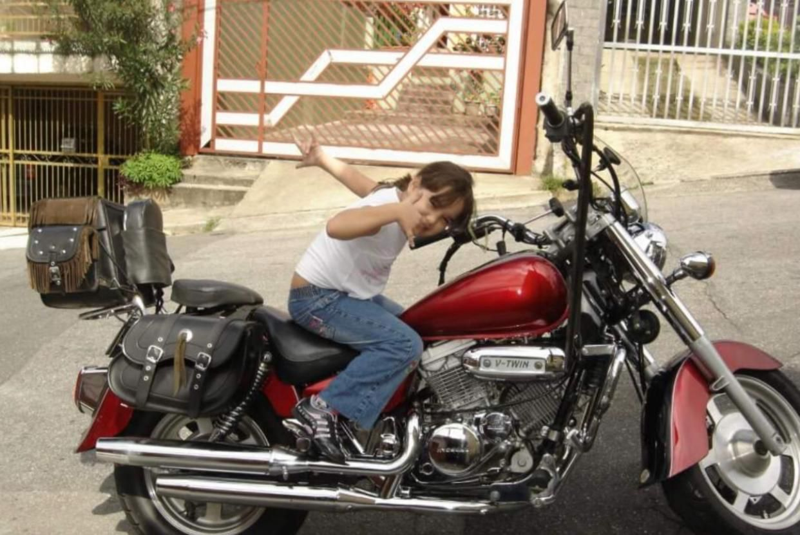

Origem:
Tudo se deu início com meu pai e meu avô, ambos aficionados por motos, pode-se dizer que as motos eram muito mais do que um hobby, na verdade era a paixão dos dois. Ao nascer, não poderia ser diferente, mesmo pequena eu já sabia que a paixão pelas motos corria em minhas veias, quando ainda jovem meu pai e avô decidiram criar um moto clube, “BRUTU’S DO ASFALTO”, e claro, eu não podia ficar de fora, mesmo sendo uma criança me juntava a eles quase sempre, com isso minha paixão pelas motos só foi aumentando e se tornando mais intensa a cada dia e até hoje meu sangue pulsa com a ideia de fazer parte disso.
Muita coisa mudou nos últimos anos, por isso nada mais justo do que mudar também, com isso em mente, planejei este site, o MotorCode, que visa a comunicação e publicação de eventos em moto clubes de diversas áreas, dessa forma juntando e apresentando uns aos outros. O mundo das motos está em constante ascensão há anos, por isso quero dar este empurrãozinho para que nós sejamos reconhecidos.
